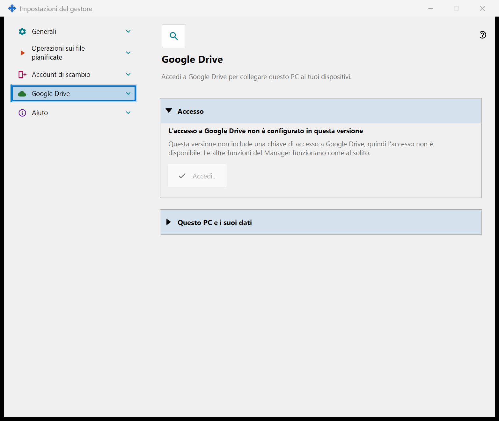
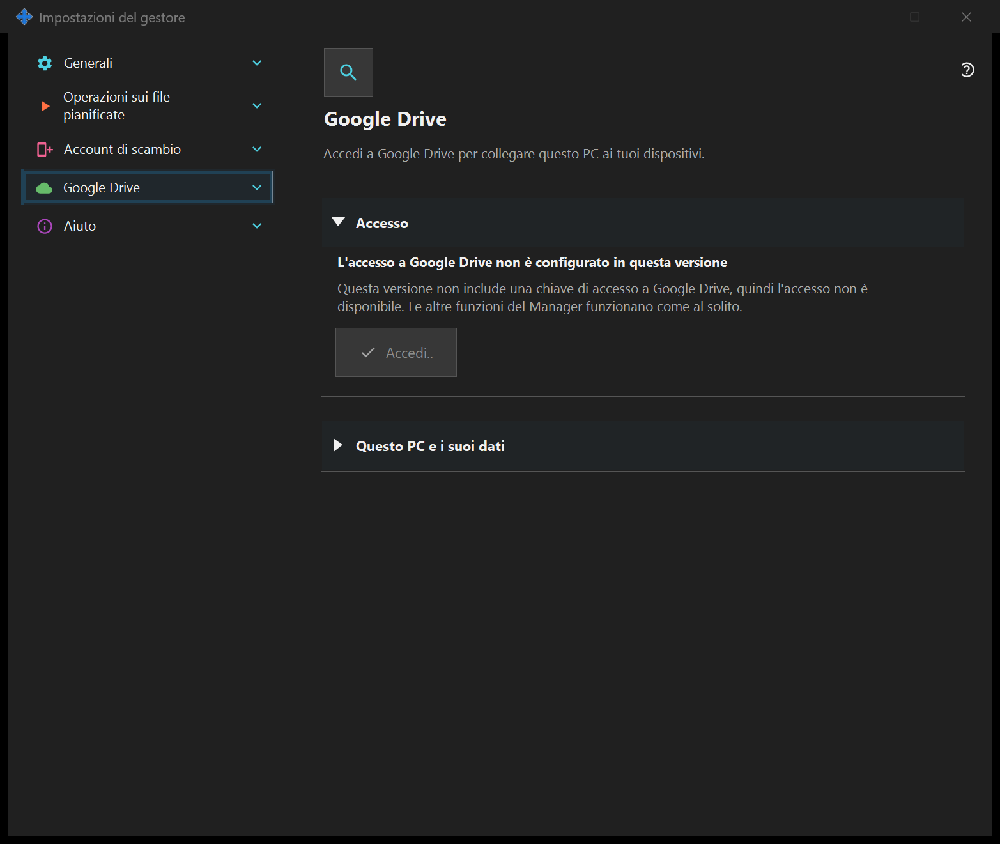

Impostazioni del gestore
Impostazioni del gestore
Scopo
Avvio, tema, lingua, account remoto, pubblicazione, appunti e operazioni pianificate appartengono al gestore e non richiedono un server locale. Se il componente di condivisione SFTP è installato, le sue pagine formano un gruppo in questa finestra.


In questo ordine
Aprire dal menu dell’area di notifica o dai collegamenti dei componenti. Aprire e chiudere non avvia né arresta alcun server. L’accesso remoto non richiede il server locale.
Gli elementi
Impostazioni del gestore
Avvio, tema, lingua, account remoto, pubblicazione, appunti e operazioni pianificate appartengono al gestore e non richiedono un server locale. Se il componente di condivisione SFTP è installato, le sue pagine formano un gruppo in questa finestra. Aprire dal menu dell’area di notifica o dai collegamenti dei componenti. Aprire e chiudere non avvia né arresta alcun server. L’accesso remoto non richiede il server locale.
Impostazioni del gestore
Avvio, tema, lingua, account remoto, pubblicazione, appunti e operazioni pianificate appartengono al gestore e non richiedono un server locale. Se il componente di condivisione SFTP è installato, le sue pagine formano un gruppo in questa finestra. Aprire dal menu dell’area di notifica o dai collegamenti dei componenti. Aprire e chiudere non avvia né arresta alcun server. L’accesso remoto non richiede il server locale.
Google Drive
Qui questo PC accede al tuo account Google, così che l'applicazione possa usare la propria cartella nascosta privata sul tuo Google Drive. Premi «Accedi..»: si apre il browser predefinito, confermi l'accesso presso Google e Google restituisce la risposta a questo PC tramite un indirizzo locale; poi puoi chiudere la scheda del browser. L'unica autorizzazione richiesta è l'accesso alla cartella nascosta dell'applicazione sul tuo Google Drive (ambito drive.appdata): l'applicazione non può vedere nessun altro file sul tuo Google Drive e non riceve né indirizzo e-mail né dati del profilo. Se Google concede un accesso diverso da quello richiesto, l'accesso viene rifiutato. La riga in grassetto mostra lo stato. «Accesso a Google Drive non effettuato»: «Accedi..» è disponibile; se l'autorizzazione è stata revocata o è scaduta, lo dice la riga sotto, che invita ad accedere di nuovo. «In attesa dell'accesso nel browser..»: completa l'accesso nel browser oppure premi «Annulla». «Accesso a Google Drive effettuato»: questo PC è collegato al tuo Google Drive e ne vengono mostrati il nome e l'identificatore breve. «Google Drive al momento non è disponibile»: la riga sotto indica il motivo - nessuna connessione, limite giornaliero di caricamento raggiunto, nessuno spazio libero sul tuo Google Drive o un errore di Google; senza connessione o in caso di errore l'applicazione riprova da sola. «Uscita da Google Drive..» compare finché l'uscita è in corso. «Esci da questo dispositivo» pone una sola domanda, con risposta predefinita «No». Dopo «Sì» revoca l'accesso presso Google, elimina i record di questo PC dalla cartella nascosta sul tuo Google Drive ed elimina il token di accesso memorizzato su questo PC; una riga sotto i pulsanti indica quanti record sono stati eliminati oppure che Google non ha confermato la revoca, che puoi allora eseguire nelle impostazioni dell'account Google. In una versione senza chiave di accesso Google la pagina mostra «L'accesso a Google Drive non è configurato in questa versione», «Accedi..» è disattivato e le altre funzioni del Manager funzionano come al solito.


Impostazioni del gestore
Avvio, tema, lingua, account remoto, pubblicazione, appunti e operazioni pianificate appartengono al gestore e non richiedono un server locale. Se il componente di condivisione SFTP è installato, le sue pagine formano un gruppo in questa finestra. Aprire dal menu dell’area di notifica o dai collegamenti dei componenti. Aprire e chiudere non avvia né arresta alcun server. L’accesso remoto non richiede il server locale.
Impostazioni del gestore
Avvio, tema, lingua, account remoto, pubblicazione, appunti e operazioni pianificate appartengono al gestore e non richiedono un server locale. Se il componente di condivisione SFTP è installato, le sue pagine formano un gruppo in questa finestra. Aprire dal menu dell’area di notifica o dai collegamenti dei componenti. Aprire e chiudere non avvia né arresta alcun server. L’accesso remoto non richiede il server locale.
Impostazioni server di scambio
Impostazioni del gestore · Impostazioni condivisione SFTP · Impostazioni server di scambio